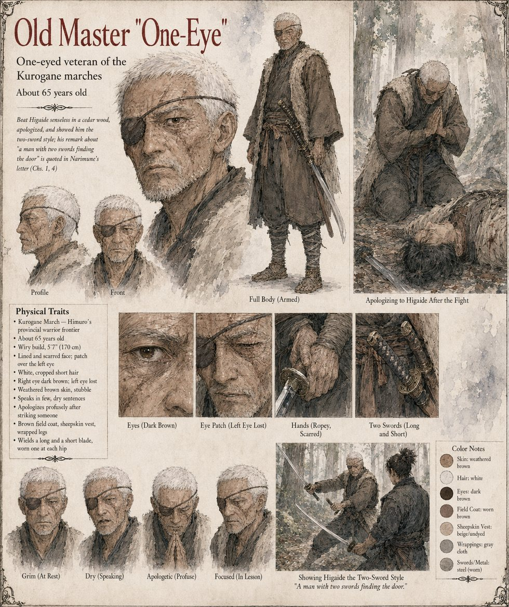

Old Master One-Eye
One-eyed veteran of the Kurogane marches · the old master who showed Higaide the two swords · about 65 years old by his sheet
He is never on the page in the present. In the opening chapter a one-eyed veteran of the Kurogane marches is the reason Tomobe no Higaide wears the long tachi Yoake at his left hip and the short straight Yoiyami at his right, a pairing the court considers an affectation: the veteran had once beaten the young Higaide senseless in a cedar wood and then, apologizing profusely, shown him how it was done. The habits of the lesson outlast it. Higaide runs with his scabbards held against his thighs in the way his old master insisted upon, and before any duty he considers serious he unties and re-ties each sword-cord seven times, which the old master called the only superstition he had ever seen a man acquire in the interest of better knots.
His one other appearance is a joke in a letter. Narimune, in the four lines a rider brings two days before the ordeal, says that old One-Eye would certainly have told his cousin that a man with two swords should be able to find the door, and Higaide laughs, once, and stays. The manuscript uses “a one-eyed veteran”, “his old master” and “old One-Eye” without saying outright that they are one man, and never says whether he is alive, which eye he lacks, or what he was called. The sheet takes them for one man and adds the rest: an eye-patch over the left eye, white cropped hair, a lined and scarred face, a field coat and sheepskin vest, a long blade and a short, and about sixty-five years. Its caption, a man with two swords finding the door, compresses Narimune's line. Of the rider who brings it, the text says nothing further either.